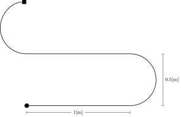

Clase 12
Semana 16 - 08/12/2026
Debe estar parametrizado al menos el radio de las ruedas de tracción y la separación de las mismas
<?xml version="1.0"?>
<robot name="diffbot" xmlns:xacro="http://www.ros.org/wiki/xacro">
<!-- ... -->
<xacro:property name="wheel_radius" value="0.035"/>
<xacro:property name="wheel_sep" value="0.135"/>
<!-- ... -->
<link name="left_wheel">
<!-- ... -->
<collision>
<origin xyz="0 0 0" rpy="${pi/2} 0 0"/>
<geometry>
<cylinder radius="${wheel_radius}" length="${wheel_width}"/>
</geometry>
</collision>
<xacro:inertial_cylinder mass="${wheel_mass}" length="${wheel_width}" radius="${wheel_radius}">
<origin xyz="0 0 0" rpy="${pi/2.0} 0 0"/>
</xacro:inertial_cylinder>
</link>
</robot>Ventajas de XACRO
${..} y constantes como pixacro:property y argumentos xacro:argsEjemplo
<?xml version="1.0"?>
<robot name="diffbot" xmlns:xacro="http://www.ros.org/wiki/xacro">
<xacro:property name="wheel_radius" value="0.035"/>
<xacro:property name="wheel_width" value="0.025"/>
<!-- ... -->
<link name="left_wheel">
<!-- ... -->
<collision>
<geometry>
<cylinder radius="${wheel_radius}" length="${wheel_width}"/>
</geometry>
</collision>
</link>
<!-- ... -->
</robot>Ventajas de XACRO
Ejemplo
<xacro:macro name="rueda" params="prefijo radio ancho">
<link name="${prefijo}_link">
<visual>
<geometry>
<cylinder radius="${radio}" length="${ancho}" />
</geometry>
</visual>
<collision>
<geometry>
<cylinder radius="${radio}" length="${ancho}" />
</geometry>
</collision>
</link>
</xacro:macro>
<!-- ... -->
<xacro:rueda prefix="rueda_derecha" radio="${wheel_radius}" ancho="${wheel_width}" /> Definición de la ubicación de las mallas
$(find [nombre_paquete]):Ejemplo con 'diffbot_description'
<?xml version="1.0"?>
<robot name="diffbot" xmlns:xacro="http://www.ros.org/wiki/xacro">
<!-- caster base (fijo) -->
<link name="caster_base_link">
<visual>
<origin xyz="0 0 0" rpy="0 0 0" />
<geometry>
<mesh filename="file://$(find diffbot_description)/meshes/caster_base.stl" />
</geometry>
<material name="silver"/>
</visual>
<!-- ... -->
</link>
</robot>Estructura del Workspace
Estructura 'robot_description'
Ejemplo 'description.launch.py'
from launch import LaunchDescription
from launch.actions import DeclareLaunchArgument
from launch.conditions import IfCondition
from launch.substitutions import Command, PathJoinSubstitution, LaunchConfiguration, EqualsSubstitution
from launch_ros.actions import Node
from launch_ros.substitutions import FindPackageShare
def generate_launch_description():
# Ubicación del paquete y del archivo URDF
urdf_path = PathJoinSubstitution(
[FindPackageShare("diffbot_description"), "urdf", "diffbot_description.urdf.xacro"]
)
# Procesar archivo URDF
urdf = Command(['xacro ', urdf_path])
# Publicar el 'robot description'
node_robot_state_publisher = Node(
package = 'robot_state_publisher',
executable = 'robot_state_publisher',
output = 'screen',
parameters=[{
'robot_description': urdf
}]
)
# Parámetro para ejecutar el 'joint_state_publisher_gui'
testing_arg = DeclareLaunchArgument(
'testing', default_value='true'
)
node_joint_state_publisher_gui = Node(
condition = IfCondition(
EqualsSubstitution(LaunchConfiguration('testing'), 'true')
),
package = 'joint_state_publisher_gui',
executable = 'joint_state_publisher_gui',
output = 'screen'
)
# RViz
node_rviz2 = Node(
condition=IfCondition(
EqualsSubstitution(LaunchConfiguration('testing'), 'true')
),
package = 'rviz2',
executable = 'rviz2',
)
return LaunchDescription([
testing_arg,
node_robot_state_publisher,
node_joint_state_publisher_gui,
node_rviz2,
])Dependencias:
xacro,robot_state_publisher,joint_state_publisher,rviz2
Ejemplo 'package.xml'
<?xml version="1.0"?>
<?xml-model href="http://download.ros.org/schema/package_format3.xsd"
schematypens="http://www.w3.org/2001/XMLSchema"?>
<package format="3">
<!-- ... -->
<exec_depend>xacro</exec_depend>
<exec_depend>robot_state_publisher</exec_depend>
<exec_depend>joint_state_publisher_gui</exec_depend>
<exec_depend>rviz2</exec_depend>
<!-- ... -->
</package>Calcular la velocidad lineal y angular del robot y de las ruedas para que se complete:
- una trayectoria recta de 1[m] en 10 [s].
- una trayectoria circular con un radio de 0.5 [m] en sentido horario en 20 [s].
Una trayectoria recta de 1[m] en 10 [s].
V lineal del robot: \(v = \frac{1 \mathrm{[m]}}{10 \mathrm{[s]}} = 0.1 \mathrm{\left[\frac{m}{s}\right]}\)
V angular del robot: \(\dot{\theta} = 0\) (linea recta)
V lineal rueda derecha = V lineal rueda izquierda (linea recta): \[\upsilon_{L|R} = 0.1 \mathrm{\left[\frac{m}{s}\right]}\]
V angular rueda derecha = V angular rueda izquierda: \[\dot\phi_{L|R} = \frac{v}{r} = \frac{0.1 \mathrm{\left[\frac{m}{s}\right]}}{0.035 \mathrm{\left[\frac{m}{rad}\right]}} \approx 2.857 \mathrm{\left[\frac{rad}{s}\right]}\]
Una trayectoria circular con un radio de 0.5 [m] en sentido horario en 20 [s].
V angular del robot: \(\require{color} \dot{\theta} = \textcolor{Maroon}{-} \frac{2 \pi \mathrm{[rad]}}{20 \mathrm{[s]}} \approx \textcolor{Maroon}{-}0.314 \mathrm{\left[\frac{rad}{s}\right]}\)
V lineal del robot: \(v = \dot{\theta} \times \mathcal{R} = \textcolor{Maroon}{-} 0.314 \mathrm{\left[\frac{rad}{s}\right]} \times \textcolor{Maroon}{-} 0.5 \mathrm{\left[\frac{m}{rad}\right]} = 0.157 \mathrm{\left[\frac{m}{s}\right]}\)
V lineal rueda izquierda: \(\upsilon_L = \dot{\theta}(\mathcal{R}-\frac{b}{2}) = -0.314 (-0.5 - \frac{0.135}{2}) \approx 0.178 \mathrm{\left[\frac{m}{s}\right]}\)
V lineal rueda derecha: \(\upsilon_R = \dot{\theta}(\mathcal{R}+\frac{b}{2}) = -0.314 (-0.5 + \frac{0.135}{2}) \approx 0.135 \mathrm{\left[\frac{m}{s}\right]}\)
V angular rueda izquierda: \(\dot\phi_{L} = \frac{\upsilon_L}{r} = \frac{0.178 \mathrm{\left[\frac{m}{s}\right]}}{0.035 \mathrm{\left[\frac{m}{rad}\right]}} \approx 5.09 \mathrm{\left[\frac{rad}{s}\right]}\)
V angular rueda derecha: \(\dot\phi_{R} = \frac{\upsilon_R}{r} = \frac{0.136 \mathrm{\left[\frac{m}{s}\right]}}{0.035 \mathrm{\left[\frac{m}{rad}\right]}} \approx 3.88 \mathrm{\left[\frac{rad}{s}\right]}\)
Examinar la definición de los mensajes de tipo
geometry_msgs/Twisty describir cuál sería la secuencia de comandos de velocidad a aplicar al robot para seguir la trayectoria mostrada en la Figura 1 utilizando dichos mensajes. La velocidad máxima de giro de los motores es de 50 [rpm]

\[ 2.86 \mathrm{\left[\frac{rad}{s}\right]} \approx 0.455 \mathrm{[rps]} \approx 27.3 \mathrm{[rpm]} < 50 \mathrm{[rpm]}\]
\[\dot\phi_{L} = \frac{\dot{x} - \frac{b}{2} \dot\theta}{r} = \frac{0.0785 - \frac{0.135}{2} (-0.314) \mathrm{\left[\frac{m}{s}\right]}}{0.035 \mathrm{\left[\frac{m}{rad}\right]}} \approx 2.848 \mathrm{\left[\frac{rad}{s}\right]}\]
\[\dot\phi_{R} = \frac{\dot{x} + \frac{b}{2} \dot\theta}{r} = \frac{0.0785 + \frac{0.135}{2} (-0.314) \mathrm{\left[\frac{m}{s}\right]}}{0.035 \mathrm{\left[\frac{m}{rad}\right]}} \approx 1.637 \mathrm{\left[\frac{rad}{s}\right]}\]
\(2.848 \mathrm{\left[\frac{rad}{s}\right]} \approx 27.2 \mathrm{[rpm]} < 50 \mathrm{[rpm]}\) y \(1.637 \mathrm{\left[\frac{rad}{s}\right]} \approx 15.6 \mathrm{[rpm]} < 50 \mathrm{[rpm]}\)
\[\dot\phi_{L} = \frac{\dot{x} - \frac{b}{2} \dot\theta}{r} = \frac{0.0785 - \frac{0.135}{2} (0.314) \mathrm{\left[\frac{m}{s}\right]}}{0.035 \mathrm{\left[\frac{m}{rad}\right]}} \approx 1.637 \mathrm{\left[\frac{rad}{s}\right]}\]
\[\dot\phi_{R} = \frac{\dot{x} + \frac{b}{2} \dot\theta}{r} = \frac{0.0785 + \frac{0.135}{2} (0.314) \mathrm{\left[\frac{m}{s}\right]}}{0.035 \mathrm{\left[\frac{m}{rad}\right]}} \approx 2.848 \mathrm{\left[\frac{rad}{s}\right]}\]
geometry_msgs/TwistDefinición del mensaje
Examinar la definición de los mensajes del topic suscripto por el
JointGroupVelocityController. Calcule las velocidades angulares de las ruedas para cada comando del ejercicio 6 y construya la secuencia de mensajes de comando correspondientes.
\(\dot\phi_{L|R} = 2.857 \mathrm{\left[\frac{rad}{s}\right]}\)
\(\dot\phi_{L} = 2.848 \mathrm{\left[\frac{rad}{s}\right]}\), \(\dot\phi_{R} = 1.637 \mathrm{\left[\frac{rad}{s}\right]}\)
\(\dot\phi_{L} = 1.637 \mathrm{\left[\frac{rad}{s}\right]}\), \(\dot\phi_{R} = 2.848 \mathrm{\left[\frac{rad}{s}\right]}\)
std_msgs/Float64MultiArrayDefinición del mensaje
ros2 topic pub /left_wheel_velocity_controller/commands std_msgs/msg/Float64MultiArray {data: [1.64]}ros2 topic pub /right_wheel_velocity_controller/commands std_msgs/msg/Float64MultiArray {data: [2.85]}ros2 topic pub /left_wheel_velocity_controller/commands std_msgs/msg/Float64MultiArray {data: [2.86]}ros2 topic pub /right_wheel_velocity_controller/commands std_msgs/msg/Float64MultiArray {data: [2.86]}ros2 topic pub /left_wheel_velocity_controller/commands std_msgs/msg/Float64MultiArray {data: [2.85]}ros2 topic pub /right_wheel_velocity_controller/commands std_msgs/msg/Float64MultiArray {data: [1.64]}ros2 topic pub /left_wheel_velocity_controller/commands std_msgs/msg/Float64MultiArray {data: [2.86]}ros2 topic pub /right_wheel_velocity_controller/commands std_msgs/msg/Float64MultiArray {data: [2.86]}ros2 topic pub /left_wheel_velocity_controller/commands std_msgs/msg/Float64MultiArray {data: [1.64]}ros2 topic pub /right_wheel_velocity_controller/commands std_msgs/msg/Float64MultiArray {data: [2.85]}ros2 topic pub /left_wheel_velocity_controller/commands std_msgs/msg/Float64MultiArray {data: [2.86]}ros2 topic pub /right_wheel_velocity_controller/commands std_msgs/msg/Float64MultiArray {data: [2.86]}[..] Tenga en cuenta que los parámetros del robot se encuentran en el robot description.
Ejemplo 'control_node.py'
# ..
from std_msgs.msg import Float64MultiArray
class DiffbotControl(Node):
def __init__(self):
# ..
# Parámetro de separación de ruedas
self.declare_parameter('wheel_separation', 0.135)
# Parámetro de radio de rueda
self.declare_parameter('wheel_radius', 0.07/2)
# Obtener los parámetros
self.wheel_sep = self.get_parameter('wheel_separation').get_parameter_value().double_value
self.wheel_r = self.get_parameter('wheel_radius').get_parameter_value().double_value
# ..
def sub_callback(self, msg: Twist):
# ...
def main(args=None):
# 1. Inicialización
rclpy.init(args=args)
# 2. Creación de nodo
nodo = DiffbotControl()
try:
# 3. Procesamiento de mensajes y callback
rclpy.spin(nodo)
else:
# 4. Finalización
rclpy.shutdown()
if __name__ == '__main__':
main()Configuración
setup.pypara archivos de configuración de RViz
setup.py
from setuptools import setup
package_name = 'nombre_paquete'
setup(
name=package_name,
version='0.0.0',
packages=[package_name],
# Files we want to install, specifically launch files
data_files=[
# Install marker file in the package index
('share/ament_index/resource_index/packages',
['resource/' + package_name]),
# Include our package.xml file
('share/' + package_name, ['package.xml']),
# Instalar archivos 'launch'
(os.path.join('share', package_name, 'launch'), glob(os.path.join('launch', '*.launch.py'))),
# Instalar archivos de configuración de RViz
(os.path.join('share', package_name, 'rviz'), glob(os.path.join('rviz', '*.rviz'))),
],
# ..
)